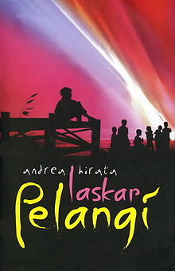

Penulis : Andrea Hirata
Penerbit : Bentang
Kota Terbit : Yogyakarta
TahunTerbit : 2007
Cetakan : III
Tebal Buku : 533 halm. Termasuk juga tentang Penulis
Novel ini mengisahkan tentang sepuluh anak Belitung yang tergabung dalam Laskar Pelangi mereka adalah Mahar, Ikal, Lintang, Harun, Syahdan,A Kiong,Trapani, Borek, Kucai dan satu-satunya wanita yaitu Sahara . Cerita ini mengisahkan tentang kehidupan di pedalaman Belitung yang kontras dan yang kaya akan timah, namun masyrakatnya tidak mampu memenuhi kehidupannya sehari-hari. Novel ini juga menceritakan tentang semangat juang dari anak-anak kampung Belitung untuk mengubah nasib mereka melalui sekolah. Sebagian besar orang tua mereka lebih senang melihat anak-anaknya membantunya dari pada belajar di sekolah.
Kesulitan terus menerus membayangi sekolah kampung itu, sekolah yang dibangun atas jiwa ikhlas dan kepeloporan dua orang guru yaitu seorang Kepala Sekolah yang sudah tua yang bernama bapak Harfan Efendy Noor dan ibu guru muda yang bernama ibu Muslimah Hafsari yang juga sangat miskin berusaha mempertahankan semangat besar pendidikan. Sekolah yang nyaris dibubarkan oleh pengawas sekolah Depdikbud Sumsel karena kekurangan murid itu terselamatkan berkat seorang anak yang sepanjang masa bersekolah yang tak pernak mendapatkan rapot.
Sekolah yang dihidupi lewat uluran tangan karena donator dikomunitas marjinal itu begitu miskin. Seperti gedung sekolahnya yang sudah roboh, ruang kelas beralas tanah, beratap bolong-bolong, berbangku seadanya dan pada malam hari dipakai untuk menyimpan ternak, bahkan kapur tulis sekalipun terasa mahal bagi sekolah yang hanya mampu menggaji guru dan kepala sekolahnya dengan sekian kilo beras, sehingga para guru itu terpaksa menafkahi keluarganya dengan cara lain. Sang kepala sekolah mencangkul sebidang kebun dan sang ibu guru menerima jahitan. Kendati demikian, keajaiban seakan terjadi setiap hari disekolah yang dari jauh tampak seperti bangunan yang akan roboh itu. Semuanya terjadi karena sejak hari pertama kelas satu sang kepala sekolah dan sang ibu guru muda yang hanya berijazah SKP ( Sekolah Kepandaian Putri ). Mereka berdua saling bahu membahu membesarkan hati anak-anak tadi agar percaya diri, berani berkompetisi, agar menghargai dan menempatkan pendidikan sebagai hal yang sangat penting dalam hidup ini. Kedua guru itu juga merupakan guru yang ulung sehingga menghasilkan seorang murid yang sangat pintar dan mereka mampu mengasah bakat beberapa murid lainnya. Pak Harfan dan buk Mus juga mengajarkan cinta sesama dan mereka amat menyayangi kesepuluh muridnya. Kedua guru miskin itu member julukan kesepuluh murid itu sebagai laskar pelangi.
Keajaiban juga terjadi ketika sekolah muhammadiyah, dipimpin oleh salah satu laskar pelangi mampu menjuarai karnaval mengalahkan sekolah PN dan keajaiban mencapai puncaknya ketika tiga orang anak anggota laskar pelangi yaitu ( Ikal, Lintang, dan Sahara ) berhasil menjuarai lomba cerdas pangkas mengalahkan sekolah-sekolah PN dan sekolah-sekolah negeri. Taayal, kejadian yang paling menyedihkan melanda sekolah muhammadiyah ketika Lintang sisiwa paling jenius anggota laskar pelangi itu harus berhenti sekolah padahal Cuma tinggal satu triwulan menyelesaikan SMP. Ia harus berhenti karena ia anak laki-laki tertua yang harus menghidupi keluarganya, sebab ayahnya sudah meninggal dunia. Meskipun awal tahun 90-an sekolah muhammadiyah itu akhirnya ditutup karena samaskali sudah tidak bisa membiayai diri sendiri, tapi semangat, integritas, keluruhan budi dan ketekunan yang diajarkan pak Harfan dan buk Mus tetap hidup dalam hati laskar pelangi. Akhirnya kedua guru itu bisa berbangga karena diantara sepuluh orang anggota laskar pelangi sekarang ada yang menjadi wakil rakyat, ada yang menjadi research and development manager disalah satu perusahaan multi nasional paling penting di negeri ini, dan juga ada yang mendapatkan beasiswa internasional kemudian melakukan research di University the paris surbonne dan lulus S2 dengan predikat with distinction dari sebuah universitar termuka di Inggris semua itu berkat dari pendidikan dan akhlak kecintaan intelektual yang diajarkan oleh pak Harfan dan buk Mus. Kedua orang hebat yang mungkin bahkan belum pernah keluar dari pulau diujung paling selatan Sumatra itu.